An Android app for hourly workers to track hours and estimate their next paycheck. One-tap clock in/out, pay calculation for overnight shifts, overtime and tips, and take-home estimates. Data is stored offline-first with optional cloud backup, in English/Korean with USD/KRW.
React Native
Expo
TypeScript
Supabase
Jest
트러블슈팅
새 기기에서 기존 계정으로 로그인이 실패하는 문제
문제
새 기기에서 급여 명세를 저장했다가 지운 뒤 기존 계정으로 로그인하면, 기기 데이터를 계정 데이터로 바꾸는 과정에서 로그인이 실패했습니다.
원인
기기의 근무·직장 데이터는 지우면서 삭제된 급여 명세 기록(tombstone)은 남겨 두어, 그 기록이 참조하는 직장을 지우는 순간 외래 키 제약에 걸렸습니다.
해결
급여 명세 기록까지 함께 정리하도록 고치고, 수정 전 코드에서는 실패하는 동기화 통합 테스트를 추가했습니다.
결과
같은 회귀가 생기면 테스트에서 바로 드러납니다.
광고 SDK 추가 후 클라우드 빌드 실패
문제
광고 SDK(react-native-google-mobile-ads 17.2)를 붙인 뒤 EAS 클라우드 빌드가 Gradle 설정 단계에서 실패했습니다.
원인
라이브러리 코드를 따라가 보니 설정값(googleMobileAdsJson)을 항상 읽으면서, 값은 app.json에 별도 최상위 키가 있을 때만 채우고 있었습니다. 대체 경로에는 오타가 있었습니다.
해결
app.json에 최상위 키를 추가해 우회하고, 전체 빌드 대신 Gradle 설정 단계만 로컬에서 돌려 빠르게 검증했습니다.
결과
이후 빌드가 정상적으로 통과해 Google Play 비공개 테스트까지 배포했습니다.
Windows에서 로컬 Android 빌드 실패
문제
Windows에서 로컬 Android 빌드가 계속 실패했습니다.
원인
Windows의 260자 경로 제한 때문이었습니다. Android SDK에 포함된 CMake 3.22.1의 ninja 1.10이 긴 경로를 처리하지 못했습니다.
해결
시스템 설정을 바꾸는 대신 EAS 클라우드에서 개발 빌드를 한 번 만들고, 이후에는 Metro로 반복 개발하도록 흐름을 바꿨습니다. 네이티브 의존성이 바뀔 때만 다시 빌드하면 된다는 점을 README에 정리했습니다.
Troubleshooting
Signing in on a new phone failed
Problem
After saving and then deleting a paycheck on a new phone, signing in to an existing account failed while replacing the local data with the account's.
Cause
It deleted the device's shifts and jobs but left the deleted-paycheck tombstone behind, so deleting the job it referenced hit a foreign key constraint.
Fix
Cleared paycheck tombstones as well, and added a sync integration test that fails without the fix.
Result
The same regression is now caught by a test.
Cloud build broke after adding the ads SDK
Problem
After adding react-native-google-mobile-ads 17.2, EAS cloud builds failed during Gradle configuration.
Cause
Tracing the library code showed it always read a config value (googleMobileAdsJson) but only set it when app.json had its own top-level key. The fallback path had a typo.
Fix
Added the top-level key to app.json as a workaround, and verified it quickly with a configuration-only local Gradle run instead of a full build.
Result
Builds passed again and the app shipped to Google Play closed testing.
Local Android builds failed on Windows
Problem
Local Android builds kept failing on Windows.
Cause
Windows' 260-character path limit. The ninja 1.10 bundled with the SDK's CMake 3.22.1 can't handle long paths.
Fix
Instead of changing system settings, built a development client once on EAS and iterated with Metro after that. Documented in the README that a rebuild is only needed when native dependencies change.
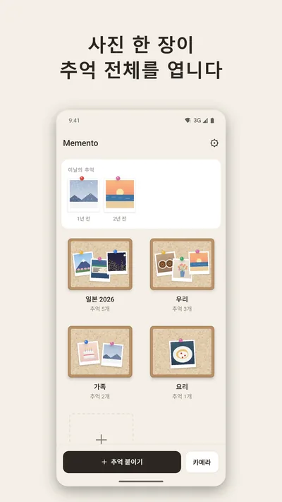
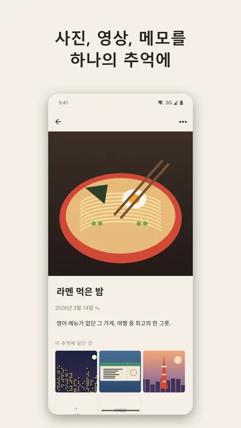
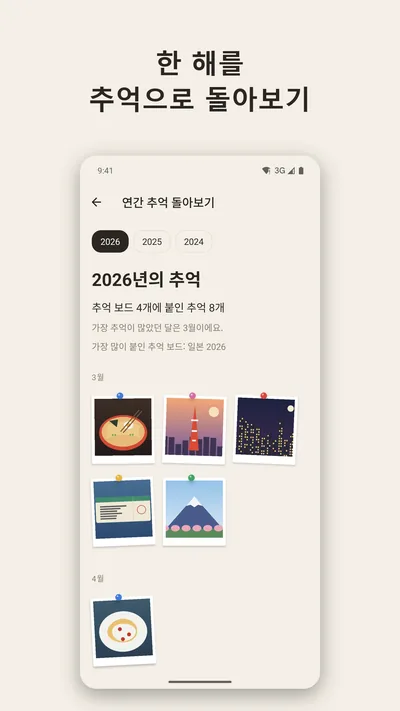
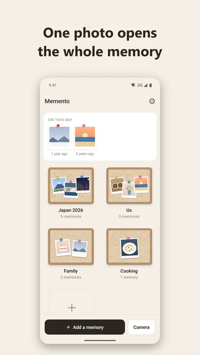
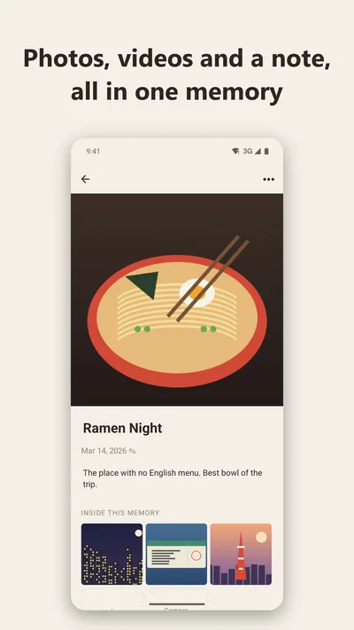
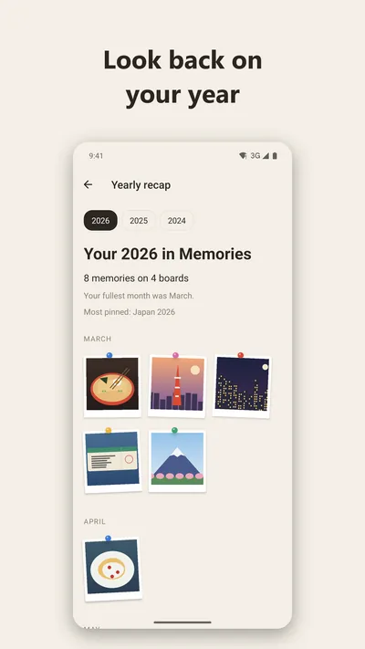
Memento
모바일 앱 · Google Play 비공개 테스트 중
Mobile app · In Google Play closed testing
사진 한 장을 표지로 관련 사진·영상·메모를 하나의 추억으로 묶어 보드에 모아두는 모바일 앱입니다. 계정이나 서버 없이 모든 데이터를 기기 안 SQLite에 저장하고, zip 파일이나 Google Drive로 백업합니다. 홈 화면 위젯과 한국어/영어를 지원하며, 핵심 흐름 5개를 Maestro로 E2E 테스트합니다.
A mobile app that turns one symbolic photo into the cover of a memory holding related photos, videos and a note, pinned to boards. Everything stays on the device in SQLite with no accounts or server, backed up as a zip file or to Google Drive. Includes a home-screen widget, English/Korean, and 5 core flows covered by Maestro E2E tests.
추억 500개(사진 1,090장, 1.3GB)를 넣은 릴리스 빌드에서 글꼴 크기를 바꾸면 앱이 오류 화면으로 넘어갔습니다.
원인
Android가 화면(액티비티)을 다시 만들면서 DB 연결이 새로 열리는데, 연결마다 WAL 모드를 다시 설정하고 잠금 대기 시간이 없어 기존 연결과 부딪히면 바로 실패했습니다.
해결
WAL은 DB를 만들 때 한 번만 설정하고, 연결마다 busy_timeout 5초를 둬 잠금이 풀릴 때까지 기다리게 했습니다.
결과
같은 시나리오에서 오류가 더 이상 나지 않습니다.
4GB가 넘는 백업 파일이 손상될 위험
문제
대용량 QA 중 백업 zip이 4GB를 넘으면 파일이 깨질 수 있다는 점을 발견했습니다.
원인
사용 중인 zip 라이브러리(fflate)가 4GB 이상을 위한 Zip64 형식을 지원하지 않습니다.
해결
백업을 3.5GB 미만 파트로 나누고 파트마다 전체 인덱스를 넣었습니다. 압축은 스트리밍으로 처리해 미디어 파일을 한 번에 하나만 엽니다.
결과
1.3GB 백업을 199초에 내보내는 동안 최대 메모리 248MB를 유지했고, PC에서 1,591개 항목의 CRC 검증을 통과했습니다.
연간 회고 화면 버벅임: 끊기는 프레임 13.6% → 5.4%
문제
사진 77장이 있는 연간 회고 화면에서 끊기는 프레임이 13.6%, 메모리 사용량이 320MB였습니다.
해결
목록을 가상화해 화면에 보이는 항목만 렌더링했습니다.
결과
끊기는 프레임 13.6% → 5.4%, 메모리 320MB → 252MB로 줄었습니다.
늦게 뜬 광고가 촬영 버튼을 밀어 올리는 문제
문제
Maestro E2E 테스트에서 광고 배너가 늦게 로드되면서 촬영 버튼을 위로 밀어 올리는 것을 발견했습니다. 누르려는 순간 버튼이 움직여 광고를 잘못 누를 위험이 있었습니다.
해결
광고를 불러오는 동안에도 배너 자리를 미리 확보하고, 광고가 꺼진 경우에만 공간을 접었습니다.
결과
E2E 흐름 5개가 에뮬레이터에서 모두 통과합니다.
Troubleshooting
"database is locked" after changing the font size
Problem
On a release build loaded with 500 memories (1,090 photos, 1.3 GB), changing the font size sent the app to an error screen.
Cause
Android recreates the activity, which opens a new DB connection. Each connection set WAL mode again with no busy timeout, so any lock conflict failed immediately.
Fix
Set WAL once when the database is created, and gave each connection a 5-second busy_timeout to wait for locks.
Result
The same scenario no longer errors.
Backups over 4 GB could be corrupted
Problem
Large-collection QA showed that a backup zip over 4 GB could be corrupted.
Cause
The zip library (fflate) doesn't support Zip64, the format needed past 4 GB.
Fix
Split backups into parts under 3.5 GB, each with the full index. Compression streams, keeping only one media file open at a time.
Result
A 1.3 GB backup exported in 199 s with peak memory at 248 MB, and all 1,591 entries passed a CRC check on a PC.
Janky yearly recap: dropped frames 13.6% → 5.4%
Problem
The yearly recap with 77 photos had 13.6% janky frames and used 320 MB of memory.
Fix
Virtualized the list so only visible items render.
Maestro E2E tests caught the ad banner loading late and pushing the capture buttons up, so a tap could land on the ad instead.
Fix
Reserved the banner space while ads are loading, and collapsed it only when ads are off.
Result
All 5 E2E flows pass on the emulator.
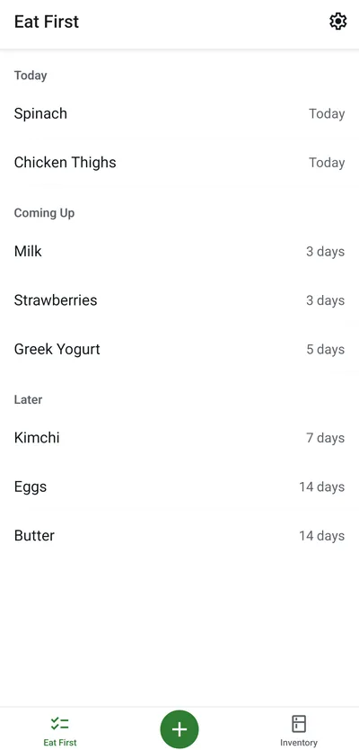
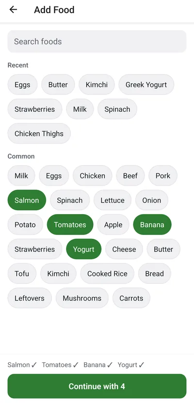
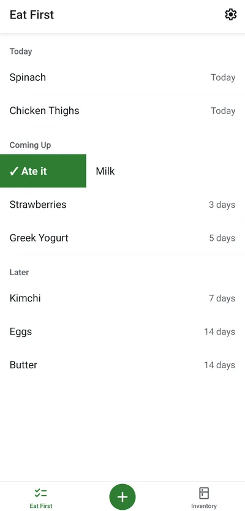
Eat First
Android 앱 · Google Play 비공개 테스트 중
Android app · In Google Play closed testing
냉장고 속 음식마다 '언제까지 먹을지(Eat By)'만 정해 두면 먼저 먹어야 할 순서대로 보여주는 냉장고 할 일 목록 앱입니다. 370여 개 식재료 검색과 최근 항목으로 장 본 음식을 한 번에 추가하고, 먹었으면 오른쪽·버렸으면 왼쪽으로 스와이프해 정리합니다. 계정과 서버 없이 기기 안 SQLite에만 저장해 오프라인으로 동작하고, 먹을 음식이 있는 날에만 하루 한 번 알림을 보냅니다.
A to-do list for your fridge: set when you want to eat each food (its Eat By) and the app shows what to eat first. Add a whole shopping trip at once from 370+ common foods or recent items, then swipe right when you ate it or left when you threw it away. No account or server: everything stays in on-device SQLite and works offline, with at most one reminder a day when something is due.
알림을 켜자 같은 날짜에 요약 알림이 2개씩 예약된 것을 에뮬레이터의 알람 목록(dumpsys alarm)에서 발견했습니다.
원인
권한 창이 닫히며 앱이 다시 앞으로 올 때의 새로고침과 '알림 켜기' 처리가 동시에 '전체 취소 → 7일치 다시 예약'을 실행해 순서가 엇갈렸습니다.
해결
재예약 작업을 하나의 큐로 직렬화했습니다.
결과
켜기·끄기와 시간 변경을 반복해도 하루에 정확히 1개(7일치 7개)만 예약됩니다.
Undo를 누르려다 광고를 누를 수 있는 배치
문제
'먹음' 처리 뒤 뜨는 Undo 스낵바가 하단 배너 광고 위에 겹쳐, 스낵바가 사라지는 순간 누르면 광고가 클릭될 수 있었습니다. AdMob 정책상 실수 클릭으로 볼 수 있는 배치입니다.
해결
배너의 실제 높이를 측정해 스낵바를 항상 배너 위로 올렸습니다.
결과
스낵바와 광고가 겹치지 않습니다.
Eat By 날짜가 하루 밀릴 수 있는 문제 예방
문제
테스트 에뮬레이터는 현지 날짜가 10월 5일인데 UTC로는 이미 10월 6일이었습니다. 날짜를 toISOString()으로 저장하면 '오늘' 그룹이 하루 어긋납니다.
해결
Eat By를 현지 달력 날짜(YYYY-MM-DD)로 저장하고, 남은 일수는 서머타임 영향을 받지 않게 계산했습니다. 한국·UTC·미국 동부 시간대에서 도는 자체 검사 스크립트를 남겼습니다.
결과
UTC-10 에뮬레이터에서도 오늘 날짜와 '1 day past Eat By' 표시가 정확했습니다.
스크린리더가 탭 이름 앞에 알 수 없는 문자를 읽는 문제
문제
접근성 트리를 확인하다가 하단 탭 라벨이 ', Inventory'처럼 보이지 않는 문자로 시작하는 것을 발견했습니다.
원인
아이콘 폰트의 글리프(사설 영역 문자)가 탭 라벨에 그대로 합쳐졌습니다.
해결
각 탭에 명시적인 접근성 라벨을 지정했습니다.
Troubleshooting
The daily summary was scheduled twice
Problem
Right after turning reminders on, the emulator's alarm list (dumpsys alarm) showed two summary notifications for the same day.
Cause
The refresh that runs when the permission dialog closes and the app returns to the foreground raced the "turn on" handler, and both ran "cancel all, then schedule 7 days" interleaved.
Fix
Serialized rescheduling through a single queue.
Result
Toggling and changing the time repeatedly always leaves exactly one per day (7 for the week).
A tap meant for Undo could hit the ad
Problem
The Undo snackbar shown after marking food eaten sat on top of the bottom banner ad, so tapping just as it disappeared could click the ad, which AdMob treats as an accidental-click placement.
Fix
Measured the banner's real height and always lifted the snackbar above it.
Result
The snackbar and the ad never overlap.
Keeping Eat By dates from slipping a day
Problem
On the test emulator it was October 5 locally but already October 6 in UTC. Storing dates with toISOString() would shift the "Today" group by a day.
Fix
Stored Eat By as a local calendar date (YYYY-MM-DD) and computed days left in a DST-safe way, with a self-check script that runs in Korean, UTC and US Eastern time zones.
Result
Even on a UTC-10 emulator, "Today" and "1 day past Eat By" were correct.
Screen readers read a stray character before tab names
Problem
Inspecting the accessibility tree showed bottom tab labels like ", Inventory" starting with an invisible character.
Cause
The icon font's glyph (a private-use character) was being merged into the tab label.
Fix
Gave every tab an explicit accessibility label.
484테스트tests
70머지한 PRmerged PRs
ADOS
Python CLI 프레임워크
Python CLI framework
AI 코딩 에이전트가 안전하게 작업하도록 만든 개발 워크플로 프레임워크(Python CLI)입니다. 구현 에이전트와 독립된 리뷰 에이전트를 분리하고, 기능마다 별도 git worktree에서 작업하며, 정확한 커밋(HEAD) 기준으로 검증과 리뷰를 통과해야 머지합니다.
A development workflow framework (Python CLI) that keeps AI coding agents working safely. It separates the implementing agent from an independent reviewing agent, runs each feature in its own git worktree, and merges only after validation and review pass on the exact commit (HEAD).
리뷰 에이전트가 결정을 Markdown 강조나 끝 마침표, 덧붙인 설명과 함께 쓰면(예: **Decision:** Approved.) ADOS가 리뷰 결정을 읽지 못했습니다.
원인
LLM 출력은 형식이 매번 조금씩 다른데, 파서는 정확히 일치하는 문자열만 기대했습니다.
해결
강조 기호, 라벨 마크업, 끝 마침표, 덧붙은 설명을 차례로 정규화하고 실패한 사례마다 회귀 테스트를 추가했습니다.
main이 앞서 나가면 중단된 실행을 재개하지 못하는 문제
문제
실행이 멈춘 사이 다른 PR이 main에 머지되면 그 실행을 다시 시작할 수 없었습니다.
원인
재개 조건이 실행을 시작할 때 기록한 기준 커밋이 아니라 현재 main의 HEAD와 비교하고 있었습니다.
해결
실행 기록에 저장된 기준 커밋(authoritative base SHA)과 비교하도록 고치고, main이 바뀐 상황을 재현하는 테스트를 추가했습니다.
정리 작업을 다시 실행하면 실패하는 문제
문제
머지 후 worktree 정리가 중간에 끊긴 뒤 다시 실행하면, 이미 지워진 worktree 때문에 실패했습니다.
해결
이미 제거된 worktree는 정리가 끝난 것으로 처리해, 몇 번을 다시 실행해도 같은 결과가 나오도록(멱등) 바꿨습니다.
Troubleshooting
LLM review decisions weren't recognized
Problem
When the reviewing agent wrote its decision with Markdown emphasis, a trailing period or extra text (e.g. **Decision:** Approved.), ADOS couldn't read it.
Cause
LLM output varies slightly every time, but the parser expected an exact string.
Fix
Normalized emphasis markers, label markup, trailing periods and suffixes step by step, adding a regression test for each failing case.
Paused runs couldn't resume after main moved
Problem
If another PR merged into main while a run was paused, that run couldn't be resumed.
Cause
The resume check compared against main's current HEAD instead of the base commit recorded when the run started.
Fix
Compared against the run's recorded authoritative base SHA, and added a test that reproduces main moving ahead.
Retrying cleanup failed
Problem
If post-merge worktree cleanup was interrupted, running it again failed on the already-removed worktree.
Fix
Treated an already-removed worktree as cleaned up, so cleanup is idempotent and safe to rerun.
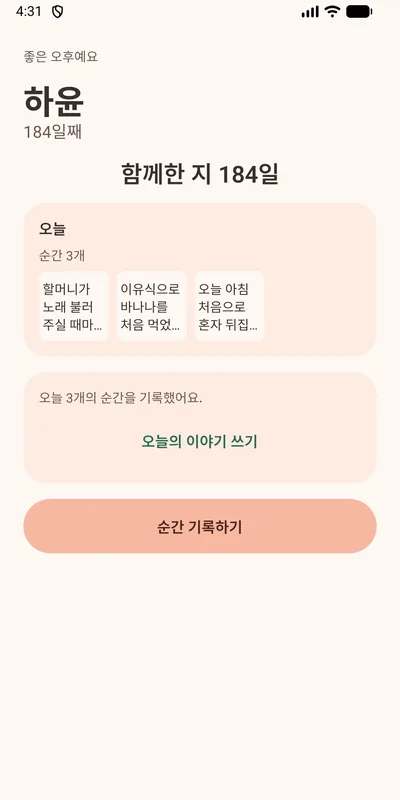
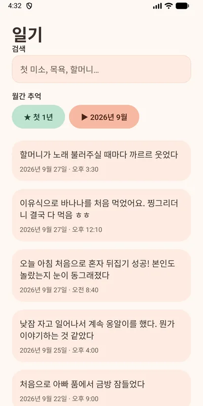
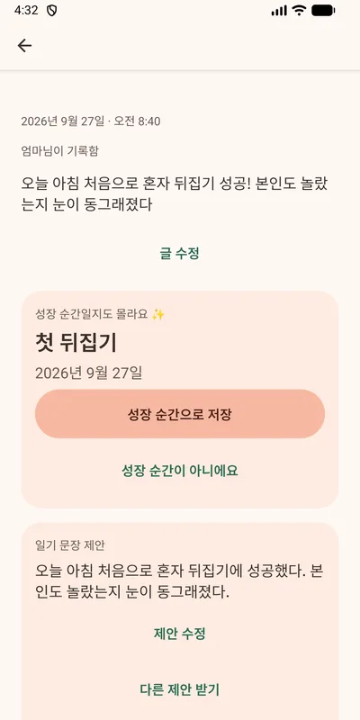
Baby Journal
모바일 앱 · 출시 준비 중
Mobile app · Preparing for launch
부모와 가족이 아이의 순간을 10초 만에 기록하고 함께 보는 육아 기록 앱입니다. 사진과 메모는 오프라인에서도 남기면 나중에 동기화되고, AI가 메모에서 성장 순간과 일기 문장을 제안합니다. 가족 초대와 실시간 공유, 기록을 근거로 답하는 '일기에 물어보기' 검색을 지원합니다.
A private family journal where parents and caregivers record a moment in 10 seconds and share it. Photos and notes work offline and sync later, and AI suggests milestones and diary sentences from notes. Families get invites, realtime sharing, and an "Ask your journal" search that answers from their own records.
가족 구성원이 지운 기록을 다른 기기에서 수정하면, 동기화 과정에서 그 기록이 다시 생겨났습니다.
원인
서버에 이미 올라간 기록도 upsert로 보내고 있어서, 삭제된 행이 새 행으로 다시 만들어졌습니다.
해결
서버가 이미 받은 기록은 update로만 보내 삭제된 경우 실패가 드러나게 했습니다. 오류도 다시 시도할 오류와 영구 오류(RLS, 외래 키, 4xx)로 나눠, 영구 실패는 기기에 실패 표시와 함께 남깁니다.
결과
지워진 기록을 수정하면 가족이 삭제했다는 안내가 뜨는 것을 에뮬레이터에서 확인했습니다.
오프라인에서 찍은 사진이 다시 연결돼도 올라가지 않는 문제
문제
네트워크가 다시 연결되면 업로드를 시작했지만 실제로 통신이 가능해지기 전에 실패했고, 다음에 앱을 켤 때까지 다시 시도하지 않았습니다.
해결
동기화할 때마다 가장 먼저 재시도할 항목에 맞춰 타이머를 걸어(백오프 재시도), 사용자가 아무것도 하지 않아도 업로드가 이어지게 했습니다.
결과
오프라인에서 찍은 사진이 재연결 약 14초 뒤 자동으로 올라가고, 앱을 다시 시작해도 사라지지 않습니다.
계정 삭제 응답 101초 → 약 1초
문제
스테이징 부하 테스트(사진 450장, 장당 350KB)에서 사진 200장 단위 데이터 내보내기가 WORKER_RESOURCE_LIMIT 오류로 실패했고, 계정 삭제는 응답까지 101초가 걸렸습니다.
해결
측정 결과를 바탕으로 내보내기를 파트당 50장(5~13초)으로 나눴습니다. 계정 삭제는 먼저 응답하고, 저장소 파일 정리는 백그라운드에서 10개씩 병렬로 처리합니다.
결과
사진 450장 계정의 삭제 응답이 101초에서 약 1초로 줄었습니다.
업로드 용량 제한을 우회할 수 있던 문제
문제
출시 전 보안 점검에서, 저장 용량 제한이 앱이 보고한 파일 크기를 그대로 믿고 있다는 점을 찾았습니다. 크기를 작게 보고하면 제한을 우회할 수 있었습니다.
해결
업로드가 끝나면 서버 함수가 R2에서 실제 파일을 측정해 기록하도록 바꾸고, 앱의 직접 쓰기 권한은 회수했습니다.
Troubleshooting
Records deleted by family came back
Problem
If one family member deleted a record and another edited it on a different phone, sync re-created the deleted record.
Cause
Records the server had already seen were still pushed with upsert, so a deleted row was simply created again.
Fix
Records the server has seen are pushed with update only, so a deletion surfaces as a failure. Errors are split into retryable and permanent (RLS, foreign key, 4xx), and permanent failures stay on the device with a clear badge.
Result
Verified on the emulator: editing a deleted record shows that a family member deleted it.
Offline photos didn't upload after reconnecting
Problem
Uploads started on reconnect but failed before the network was actually usable, and nothing retried until the next app launch.
Fix
Each sync now arms a timer for the earliest item due for retry (backoff), so uploads resume without any user action.
Result
A photo taken offline uploads about 14 seconds after reconnecting and survives an app restart.
Account deletion response: 101 s → about 1 s
Problem
In a staging load test (450 photos at 350 KB each), exporting in 200-photo parts failed with WORKER_RESOURCE_LIMIT, and account deletion took 101 seconds to respond.
Fix
Based on measurements, exports use 50-photo parts (5 to 13 s each). Account deletion responds first and purges storage in the background, 10 files in parallel.
Result
Deleting a 450-photo account now responds in about 1 second instead of 101.
Upload quota could be bypassed
Problem
A pre-launch security audit found that the storage quota trusted the file size the app reported, so under-reporting it could bypass the quota.
Fix
After an upload, a server function now measures the actual file in R2 and writes the record, and the app's direct write access was revoked.
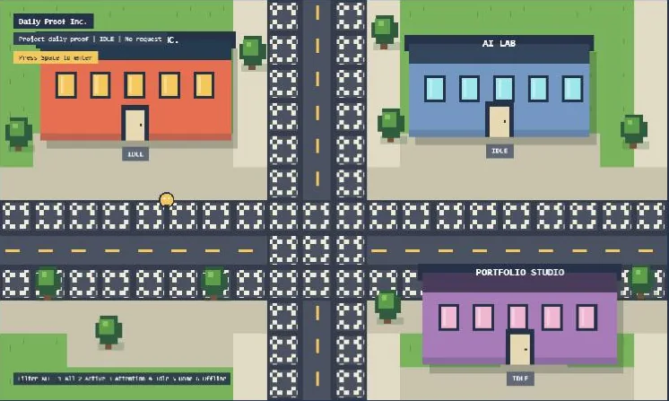
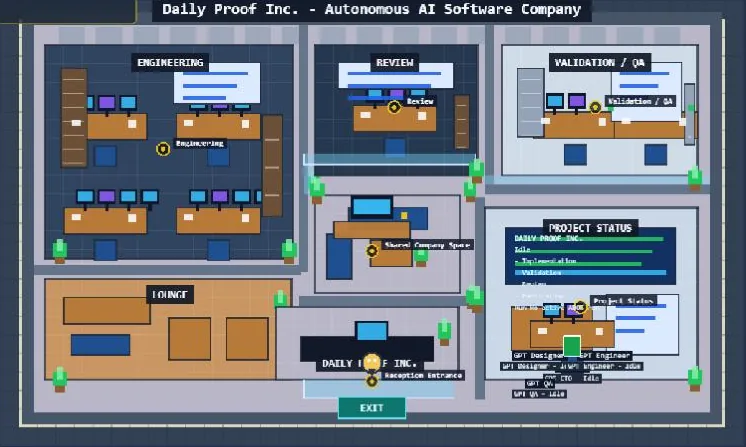
AI City (AIverse)
픽셀아트 웹 앱
Pixel-art web app
AI 에이전트를 픽셀아트 캐릭터로 보여주는 가상 도시입니다. 건물은 프로젝트, 캐릭터의 움직임과 상태는 기획·구현·리뷰 같은 작업을 나타냅니다. 스펙 146개를 진행하고 PR 130개를 머지했으며, 8월부터는 ADOS 워크플로로 개발합니다.
A pixel-art virtual city where AI agents appear as characters. Buildings are projects, and each character's movement and status reflect work like planning, implementation and review. Built across 146 specs and 130 merged PRs, with the ADOS workflow since August.
Playwright E2E 테스트가 3000번 포트에 이미 떠 있는 서버를 재사용하도록 설정돼 있어, 다른 프로젝트나 오래된 개발 서버를 대상으로 테스트가 돌 수 있었습니다.
해결
E2E 전용 포트(32122)를 쓰고 서버 재사용을 꺼서, 테스트가 항상 직접 띄운 서버를 검사하도록 했습니다.
무해한 WebGL 경고 때문에 실패하는 캔버스 테스트
문제
캔버스가 정상적으로 뜨는데도 실행 환경에 따라 나오는 WebGL 경고 때문에 스모크 테스트가 실패했습니다.
해결
문서로 확인한 무해한 경고 문구만 허용 목록에 넣고, 알 수 없는 경고·콘솔 에러·페이지 에러는 계속 실패로 처리했습니다. 필터 로직은 단위 테스트로 검증했습니다.
게임 화면 속 포털의 텍스트 겹침
문제
긴 프로젝트명, 작업 제목, 저장소 이름이 포털 패널을 넘어가거나 아래 조작 안내와 겹쳤습니다.
해결
긴 단어는 줄이고 여러 줄 요약은 줄 수를 제한했으며, 공간이 모자라면 우선순위가 낮은 행부터 생략해 핵심 상태와 조작 안내가 항상 보이게 했습니다.
Troubleshooting
E2E tests could run against the wrong server
Problem
Playwright was set to reuse any server already on port 3000, so E2E tests could run against another project or a stale dev server.
Fix
Used a dedicated E2E port (32122) and turned off server reuse, so tests always check the server they started.
Harmless WebGL warnings failed the canvas test
Problem
The smoke test failed on environment-specific WebGL warnings even when the canvas booted correctly.
Fix
Allowlisted only documented harmless warning text, while unknown warnings, console errors and page errors still fail. The filter is covered by unit tests.
Overlapping text in the in-game portal
Problem
Long project names, task titles and repository labels overflowed the portal panels or collided with the controls hint below.
Fix
Shortened long words, clamped multi-line summaries, and dropped low-priority rows first when space ran out, so core status and controls always stay visible.
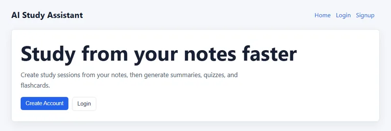
AI Study Assistant
풀스택 웹 앱
Full-stack web app
공부한 내용을 학습 세션으로 기록하면 OpenAI로 요약, 퀴즈, 플래시카드를 만들어주는 풀스택 웹 앱입니다. React 프론트엔드는 Vercel에, Express API와 PostgreSQL은 Render에 나눠 배포했고, JWT 인증과 Google 로그인을 직접 구현했습니다.
A full-stack web app that turns logged study sessions into summaries, quizzes and flashcards with OpenAI. The React frontend is deployed on Vercel and the Express API with PostgreSQL on Render, with JWT auth and Google sign-in built in.
AI 기능은 호출할 때마다 비용이 들어, 한 사용자가 반복해서 요청하거나 아주 긴 텍스트를 보내면 비용이 급격히 늘 수 있습니다.
해결
사용자별로 시간당 AI 요청을 20회로 제한하고, 초과하면 429 응답과 Retry-After 헤더로 다시 시도할 수 있는 시간을 알려줍니다. 입력은 50,000자로 제한했습니다.
AI가 만든 퀴즈를 그대로 믿지 않기
문제
모델이 JSON을 코드 블록(```json)으로 감싸 보내면 그대로 파싱할 수 없고, 정답 위치가 한쪽으로 몰릴 수 있습니다.
해결
코드 블록 표시를 벗겨낸 뒤 파싱하고, 응답이 비었거나 질문 목록이 없으면 오류로 처리합니다. 보기 순서는 서버에서 Fisher-Yates로 섞고 정답 번호를 다시 계산합니다.
다국어를 추가하면서 기존 데이터 호환
문제
퀴즈를 한국어/영어로 따로 저장하도록 구조를 바꾸면 이전 형식으로 저장된 퀴즈를 읽을 수 없게 됩니다.
해결
이전 형식의 퀴즈는 한국어 퀴즈로 읽어 들이도록 해, DB 마이그레이션 없이 기존 데이터를 그대로 쓸 수 있게 했습니다.
Technical decisions
Keeping AI costs and abuse in check
Problem
Every AI call costs money, so one user repeating requests or sending very long text could drive costs up fast.
Fix
Limited AI requests to 20 per user per hour, answering with 429 and a Retry-After header when exceeded, and capped input at 50,000 characters.
Not trusting AI-generated quizzes as-is
Problem
The model can wrap its JSON in a ```json code block, which doesn't parse directly, and correct answers can cluster in one position.
Fix
Strip the code fence before parsing, and treat an empty response or missing question list as an error. Choices are shuffled on the server with Fisher-Yates and the answer index recalculated.
Staying compatible while adding languages
Problem
Storing quizzes separately per language would make quizzes saved in the old format unreadable.
Fix
Old-format quizzes are read as the Korean quiz, so existing data keeps working without a DB migration.
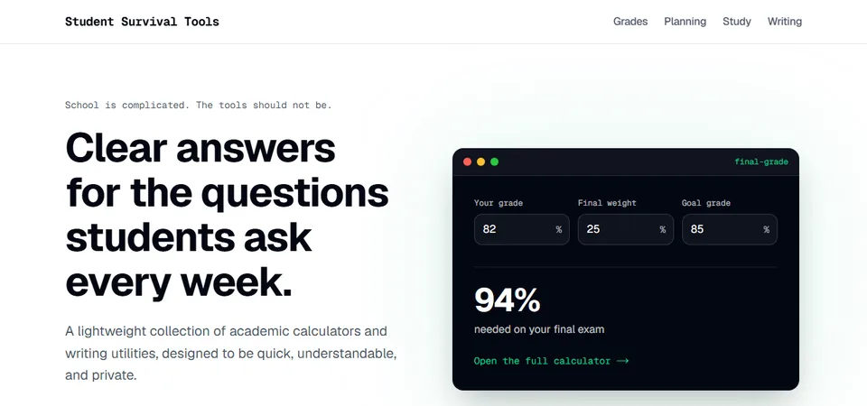
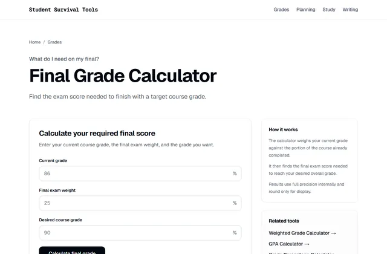
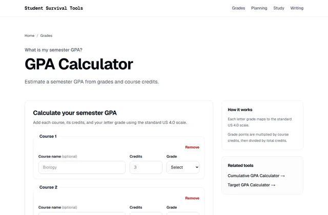
Student Survival Tools
웹사이트 · 운영 중
Website · Live
학점·GPA 계산기, 학기 계획, 공부 시간, 글쓰기 도구를 모은 학생용 웹사이트입니다. 서버 없이 정적 사이트로 만들어 Cloudflare에서 getschoolkit.com으로 운영하고 있습니다.
A website of student tools: grade and GPA calculators, semester planning, study time and writing utilities. Built as a static site with no server, and live on Cloudflare at getschoolkit.com.
AdSense 사이트 확인에 필요한 스크립트가 페이지의 <head>에 나타나지 않았습니다.
원인
Next.js의 Script 컴포넌트(afterInteractive)는 페이지가 로드된 뒤에 스크립트를 넣기 때문에, 정적 HTML의 <head>에는 포함되지 않습니다.
해결
루트 레이아웃의 <head>에 일반 async script 태그로 직접 넣었습니다.
계산 정확성을 테스트로 보장하기
문제
성적 계산기는 숫자 하나만 틀려도 신뢰를 잃습니다.
해결
계산 로직을 화면과 분리된 순수 TypeScript 함수로 만들고, E2E를 포함한 테스트 93개로 검증했습니다.
운영비가 거의 들지 않는 정적 사이트
문제
트래픽이 적은 초기에는 서버나 DB 비용을 쓰기 어렵습니다.
해결
Next.js 정적 내보내기로 만든 파일만 Cloudflare에 배포하고, 날짜 설정 같은 개인 값은 브라우저 localStorage에만 저장합니다.
Troubleshooting & decisions
AdSense verification script missing from <head>
Problem
The script AdSense needs for site verification didn't appear in the page's <head>.
Cause
Next.js's Script component (afterInteractive) injects scripts after the page loads, so they aren't in the static HTML <head>.
Fix
Added a plain async script tag directly to the root layout's <head>.
Guaranteeing correct calculations with tests
Problem
A grade calculator loses trust with a single wrong number.
Fix
Calculation logic lives in pure TypeScript functions separate from the UI, verified by 93 tests including E2E.
A static site that costs almost nothing to run
Problem
Early on, with little traffic, paying for servers or a database is hard to justify.
Fix
Only the files from Next.js static export are deployed to Cloudflare, and personal values like date settings stay in the browser's localStorage.
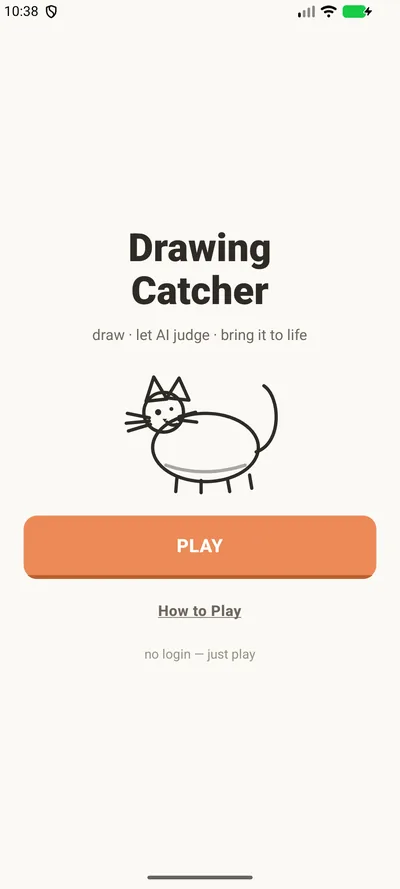
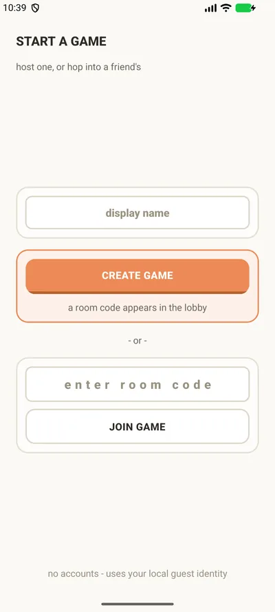
AI Sketch Game (drawingcatcher)
모바일 게임 · 프로토타입
Mobile game · Prototype
두 사람이 같은 제시어로 그림을 그리면 AI(Gemini)가 승자를 고르고, 이긴 그림을 캐릭터로 바꿔 애니메이션(Veo)으로 보여주는 실시간 2인 그림 게임입니다. 방 만들기부터 그림 업로드, 판정, 다음 라운드까지 두 기기가 Supabase Realtime으로 동기화됩니다.
A realtime two-player drawing game: both players draw the same prompt, AI (Gemini) picks a winner, and the winning sketch becomes an animated character (Veo). From creating a room to uploads, judging and the next round, both phones stay in sync through Supabase Realtime.
두 플레이어가 거의 동시에 그림을 제출하면 라운드가 '그리는 중' 상태에 멈출 수 있었습니다.
원인
제출 함수(submit_round_drawing)가 동시에 들어온 두 요청을 처리하면서 경쟁 상태(race condition)가 생겼습니다.
해결
함수가 라운드 행을 잠근(row lock) 뒤 처리하도록 바꿔, 제출이 하나씩 반영되게 했습니다.
실제 기기에서 승자 공개 화면이 멈추는 문제
문제
실제 기기에서 승자 공개 화면이 로딩 상태에서 끝나지 않았습니다.
원인
실시간 업데이트가 올 때마다 게임 상태가 새 객체로 전달되면서, 진행 중이던 캐릭터 변환·애니메이션 effect가 다시 실행되고 이전 작업이 취소됐습니다.
해결
effect가 바뀌지 않는 라운드·승자 ID에만 반응하게 하고, 단계마다 시간 제한과 대체 화면을 둬 로딩 화면에 갇히지 않게 했습니다.
클라이언트가 승자를 정하던 구조
문제
승자 ID를 앱이 서버로 보내고 있어, 앱을 조작하면 결과를 바꿀 수 있었습니다.
해결
승자는 서버에서 정하도록 바꿨습니다. 비용이 드는 애니메이션 생성도 서버 비밀 키로만 호출할 수 있는 1회용 관문을 거치게 해, 앱에서 직접 호출할 수 없게 했습니다.
Troubleshooting
Simultaneous submissions froze the round
Problem
If both players submitted at almost the same moment, the round could get stuck in the "drawing" state.
Cause
The submit function (submit_round_drawing) handled the two concurrent requests with a race condition.
Fix
The function now takes a row lock on the round before processing, so submissions apply one at a time.
The winner reveal hung on real phones
Problem
On a real device, the winner reveal screen never finished loading.
Cause
Every realtime update passed the game state as a new object, which re-ran the in-flight character and animation effect and cancelled the previous run.
Fix
The effect now depends only on stable round and winner IDs, and each stage has its own timeout and fallback so players never get stuck on a loading screen.
The client decided the winner
Problem
The app sent the winner ID to the server, so a modified app could change the result.
Fix
The server now decides the winner. Paid animation generation also goes through a one-time gate callable only with the server's secret key, so the app can't trigger it directly.
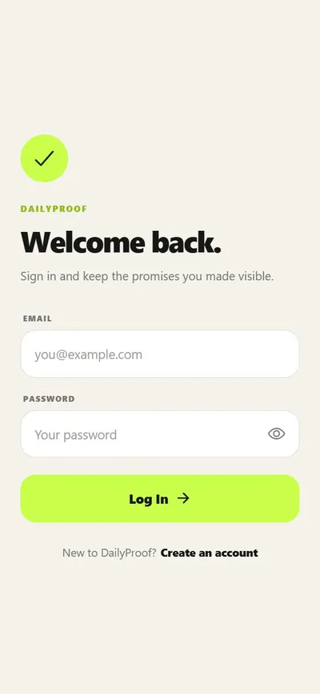
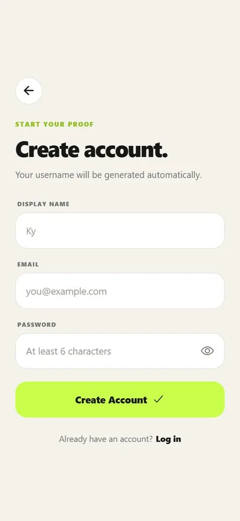
DailyProof
모바일 앱
Mobile app
목표 인증 사진을 찍으면 OpenAI Vision이 검증하고, 친구 피드·반응·댓글과 기록 통계로 꾸준함을 공유하는 모바일 앱입니다. 인증·DB·사진 저장은 Firebase로 구성했습니다.
A mobile app where you snap a photo for a daily goal, OpenAI Vision verifies it, and friends follow along through a feed with reactions, comments and history stats. Auth, database and photo storage run on Firebase.
이미 친구이거나 요청이 대기 중인 사람에게 다시 요청을 보내면, 이유를 알 수 없는 권한 오류가 났습니다.
원인
친구 관계 문서 ID를 두 사용자 ID로 만들기 때문에 새 요청이 기존 문서를 덮어쓰려 했고, 보안 규칙이 이 쓰기를 막았습니다.
해결
요청을 보내기 전에 기존 문서를 확인해 '이미 친구입니다', '이미 요청이 있습니다'처럼 상황에 맞는 안내를 보여줍니다.
로딩·오류가 '목표 없음'으로 보이는 문제
문제
카메라 화면이 목표를 불러오는 중이거나 불러오기에 실패했을 때도 '진행 중인 목표 없음'을 보여줘 혼란을 줬습니다.
해결
로딩·오류·빈 상태를 나누고, 오류일 때 다시 시도 버튼과 당겨서 새로고침을 추가했습니다.
친구에게만 보여야 하는 데이터 보호
문제
친구 피드를 보여주려면 다른 사용자의 기록을 읽어야 하지만, 프로필과 사진을 모두 공개할 수는 없습니다.
해결
Firestore와 Storage 보안 규칙으로 프로필은 본인만, 친구 공개 목표와 인증 사진은 친구 요청이 수락된 사람만 읽게 했습니다. 사진 업로드는 10MB 이하 이미지만 허용합니다.
남은 과제
데모 단계라 OpenAI 키가 앱에 포함됩니다. 출시 전에 Firebase Functions 같은 서버로 옮기도록 문서에 정리해 두었습니다.
Troubleshooting
Re-sending a friend request hit a permission error
Problem
Sending a request to someone who was already a friend, or had a pending request, failed with an unexplained permission error.
Cause
The friendship document ID is built from both user IDs, so a new request tried to overwrite the existing document, and the security rules blocked that write.
Fix
Check for an existing document first and show a clear message like "You are already friends." or "A friend request already exists."
Loading and errors looked like "no goals"
Problem
The camera screen showed "No active goals" even while goals were loading or had failed to load.
Fix
Split loading, error and empty states, and added a retry button and pull-to-refresh on error.
Protecting friends-only data
Problem
The friend feed needs to read other users' records, but profiles and photos can't be fully public.
Fix
Firestore and Storage security rules keep profiles owner-only, and friends-only goals and proof photos readable only by accepted friends. Photo uploads must be images under 10 MB.
Next
As a demo, the OpenAI key ships inside the app. Moving it behind a server such as Firebase Functions before release is documented.
나를 소개합니다
BYU-Hawaii에서 컴퓨터공학을 전공하며 Accessifier에서 6명 규모의 원격 인턴 팀을 이끌었고, Android 앱의 UI 개선과 내부 테스트를 맡았습니다. 지금은 일상의 작은 불편을 앱으로 해결하는 데 집중하고 있습니다.
기능을 만드는 데서 끝내지 않고 실제와 비슷한 데이터로 테스트하고, 문제의 원인을 찾아 기록하는 과정을 중요하게 생각합니다. 한국어와 영어로 모두 일할 수 있어서, 만드는 앱도 두 언어를 함께 지원합니다.